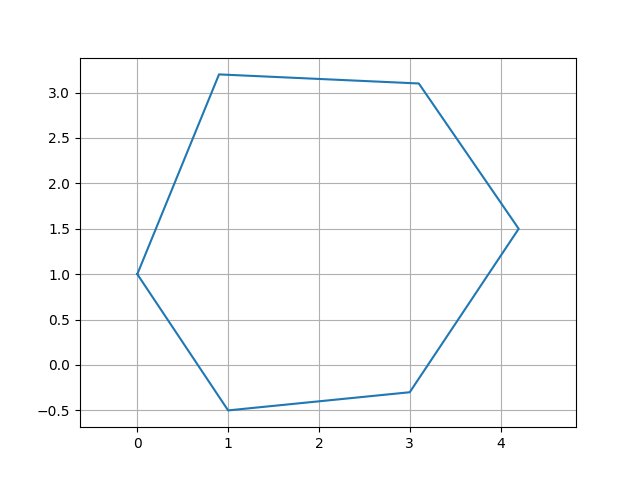
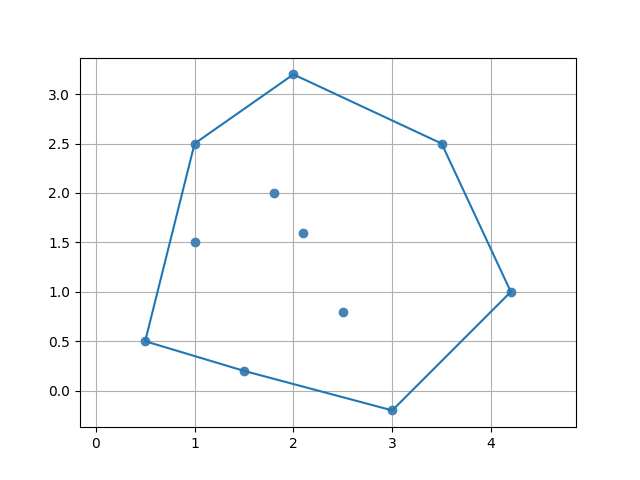

Polígonos e Coleções (2D)
Extensões de List<Point2D>
List<Point2D> possui funções de extensão para extração de coordenadas, consultas de caixa delimitadora, comprimento de arco, centroide e funções paramétricas. Estas estão disponíveis em qualquer List<Point2D>, incluindo a propriedade points de Curve2D, Polygon2D, LinearSpline e CubicSpline.
| Extensão | Tipo | Descrição |
|---|---|---|
xPoints |
List<Double> |
coordenadas x |
yPoints |
List<Double> |
coordenadas y |
length |
Double |
Comprimento de arco (soma dos comprimentos dos segmentos) |
centroid |
Point2D |
Média aritmética de todos os pontos |
minX, maxX |
Double |
limites do eixo x |
minY, maxY |
Double |
limites do eixo y |
val curva = Curve2D(Point2D(0.0, 0.0), Point2D(1.0, 1.0), Point2D(2.0, 0.0))
println(curva.points.length) // comprimento de arco
println(curva.points.centroid) // ponto médio
println(curva.points.minX) // 0.0Verificações de intervalo
curva.points.inXRange(1.5) // verdadeiro se 1.5 está dentro de [minX, maxX]
curva.points.inYRange(2.0) // falso se 2.0 está fora de [minY, maxY]Funções paramétricas da lista de pontos
Extraia objetos Function2D interpolando a lista de pontos:
val xFn: Function2D = curva.points.xParametricFunction()
val yFn: Function2D = curva.points.yParametricFunction()Curve2D
Uma sequência aberta e ordenada de valores Point2D. Suporta concatenação e transformações aritméticas.
import plane.Curve2D
import plane.elements.Point2D
val c1 = Curve2D(Point2D(0.0, 0.0), Point2D(1.0, 1.0))
val c2 = Curve2D(Point2D(1.0, 1.0), Point2D(2.0, 0.0))
val combinada: Curve2D = c1.concat(c2)Aritmética
val c = Curve2D(Point2D(0.0, 0.0), Point2D(1.0, 1.0))
// Transladar todos os pontos por um vetor
val deslocada = c + Point2D(1.0, 0.0)
// Escalar todos os pontos
val escalada = c * 3.0Rotação
import units.Angle
val rotada = c.rotate(Angle.Degrees(45.0))
val rotadaAoRedor = c.rotate(Point2D(1.0, 0.0), Angle.Degrees(90.0))Polygon2D
Um polígono fechado. O primeiro ponto é implicitamente repetido para fechar a forma.
import plane.Polygon2D
import plane.elements.Point2D
val triangulo = Polygon2D(listOf(
Point2D(0.0, 0.0),
Point2D(2.0, 0.0),
Point2D(1.0, 2.0)
))
println(triangulo.area) // calculada via fórmula do shoelaceLista de pontos fechada
// Retorna os pontos com o primeiro ponto adicionado ao final
triangulo.pointsClosedPolygon // List<Point2D> de tamanho n+1Rotação
import units.Angle
val rotado = triangulo.rotate(Angle.Degrees(90.0))
val rotadoAoRedor = triangulo.rotate(Point2D(1.0, 1.0), Angle.Degrees(45.0))Visualização
// requer geomez-visualization
triangulo.plot()
ConvexPolygon2D
Um subtipo de Polygon2D que representa um polígono convexo. Tipicamente obtido via utilitário de envoltória convexa:
import utils.convexHull
import plane.elements.Point2D
val pontos = listOf(
Point2D(0.0, 0.0),
Point2D(1.0, 2.0),
Point2D(2.0, 1.0),
Point2D(0.5, 0.5), // ponto interior — excluído da envoltória
Point2D(3.0, 0.0)
)
val (poligonoConvexo, indicesEnvoltoria) = convexHull(pontos)
// poligonoConvexo: ConvexPolygon2D
// indicesEnvoltoria: List<Int> — índices dos vértices da envoltória na lista original